Standard Overlay Goodness-of-Fit Diagnostics
Source:vignettes/articles/gof-diagnostics.Rmd
gof-diagnostics.RmdThis vignette will demonstrate pmxhelpr functions for
generating standard overlay goodness-of-fit model diagnostics for
evaluation of longitudinal non-linear mixed effects model fit.
This vignette will assume familiarity with the data_sad
internal dataset and the plot_dvtime() function, as
described in the Exploratory
Analyses of PK and PK/PD Data vignette. These elements will not be
reviewed in detail in this vignette.
options(scipen = 999, rmarkdown.html_vignette.check_title = FALSE)
library(pmxhelpr)
library(dplyr, warn.conflicts = FALSE)
library(ggplot2, warn.conflicts = FALSE)
library(Hmisc, warn.conflicts = FALSE)
library(patchwork, warn.conflicts = FALSE)Data
The example dataset used in this vignette (data_sad) is
based on a single ascending dose (SAD) study of an orally administered
drug product with a parallel group food effect (FE) cohort.
data_sad_pkfit
data_sad_pkfit is a model output dataset version of
data_sad containing model predictions from
pkmodel appended to the observed data. We can take a quick
look at the dataset using glimpse() from the dplyr package.
Dataset definitions can also be viewed by calling
?data_sad_pkfit, as one would to view the documentation for
a package function.
glimpse(data_sad_pkfit)
#> Rows: 720
#> Columns: 25
#> $ LINE <dbl> 1, 2, 3, 4, 5, 6, 7, 8, 9, 10, 11, 12, 13, 14, 15, 16, 17, 18,…
#> $ ID <dbl> 1, 1, 1, 1, 1, 1, 1, 1, 1, 1, 1, 1, 1, 1, 1, 1, 1, 1, 1, 1, 2,…
#> $ TIME <dbl> 0.00, 0.00, 0.48, 0.81, 1.49, 2.11, 3.05, 4.14, 5.14, 7.81, 12…
#> $ NTIME <dbl> 0.0, 0.0, 0.5, 1.0, 1.5, 2.0, 3.0, 4.0, 5.0, 8.0, 12.0, 16.0, …
#> $ NDAY <dbl> 1, 1, 1, 1, 1, 1, 1, 1, 1, 1, 1, 1, 2, 2, 3, 4, 5, 6, 7, 8, 1,…
#> $ DOSE <dbl> 10, 10, 10, 10, 10, 10, 10, 10, 10, 10, 10, 10, 10, 10, 10, 10…
#> $ AMT <dbl> NA, 10, NA, NA, NA, NA, NA, NA, NA, NA, NA, NA, NA, NA, NA, NA…
#> $ EVID <dbl> 0, 1, 0, 0, 0, 0, 0, 0, 0, 0, 0, 0, 0, 0, 0, 0, 0, 0, 0, 0, 0,…
#> $ ODV <dbl> NA, NA, NA, 2.02, 4.02, 3.50, 7.18, 9.31, 12.46, 13.43, 12.11,…
#> $ LDV <dbl> NA, NA, NA, 0.7031, 1.3913, 1.2528, 1.9713, 2.2311, 2.5225, 2.…
#> $ CMT <dbl> 2, 1, 2, 2, 2, 2, 2, 2, 2, 2, 2, 2, 2, 2, 2, 2, 2, 2, 2, 2, 2,…
#> $ MDV <dbl> 1, NA, 1, 0, 0, 0, 0, 0, 0, 0, 0, 0, 0, 0, 1, 1, 1, 1, 1, 1, 1…
#> $ BLQ <dbl> -1, NA, 1, 0, 0, 0, 0, 0, 0, 0, 0, 0, 0, 0, 1, 1, 1, 1, 1, 1, …
#> $ LLOQ <dbl> 1, NA, 1, 1, 1, 1, 1, 1, 1, 1, 1, 1, 1, 1, 1, 1, 1, 1, 1, 1, 1…
#> $ FOOD <dbl> 0, 0, 0, 0, 0, 0, 0, 0, 0, 0, 0, 0, 0, 0, 0, 0, 0, 0, 0, 0, 0,…
#> $ SEXF <dbl> 1, 1, 1, 1, 1, 1, 1, 1, 1, 1, 1, 1, 1, 1, 1, 1, 1, 1, 1, 1, 1,…
#> $ RACE <dbl> 2, 2, 2, 2, 2, 2, 2, 2, 2, 2, 2, 2, 2, 2, 2, 2, 2, 2, 2, 2, 1,…
#> $ AGEBL <int> 25, 25, 25, 25, 25, 25, 25, 25, 25, 25, 25, 25, 25, 25, 25, 25…
#> $ WTBL <dbl> 82.1, 82.1, 82.1, 82.1, 82.1, 82.1, 82.1, 82.1, 82.1, 82.1, 82…
#> $ SCRBL <dbl> 0.87, 0.87, 0.87, 0.87, 0.87, 0.87, 0.87, 0.87, 0.87, 0.87, 0.…
#> $ CRCLBL <dbl> 128, 128, 128, 128, 128, 128, 128, 128, 128, 128, 128, 128, 12…
#> $ USUBJID <chr> "STUDYNUM-SITENUM-1", "STUDYNUM-SITENUM-1", "STUDYNUM-SITENUM-…
#> $ PART <chr> "Part 1-SAD", "Part 1-SAD", "Part 1-SAD", "Part 1-SAD", "Part …
#> $ IPRED <dbl> 0.0000000000, 0.0000000000, 0.2399127105, 0.5809776251, 1.4434…
#> $ PRED <dbl> 0.0000000000, 0.0000000000, 1.0373644222, 2.4699025938, 5.8692…This dataset contains two additional variables representing model predictions:
-
PRED: population model predicted values accounting only for fixed effects (THETAs) -
IPRED: individual model predicted values accounting for fixed effects (THETAs) and level 1 (inter-individual) random effects (ETAs)
Let’s derive some additional variables and leverage the functionality
of var_addn() to create a new factor variable including a
count of unique individuals in each unique dosing condition for
plotting
PK Model
An example PK model (pkmodel) in mrgmod
format is provided in the internal package library. This can be loaded
using the helper function model_mread_load(), which wraps
mrgsolve::mread().
model <- model_mread_load("pkmodel")
#> Building pkmodel_cpp ... done.We can take a look at the model code using
mrgsolve::see()
mrgsolve::see(model)
#>
#> Model file: pkmodel.cpp
#> $PARAM
#> TVCL = 20
#> TVVC = 35.7
#> TVKA = 0.3
#> TVQ = 25
#> TVVP = 150
#> DOSE_F1 = 0.33
#>
#> WT_CL = 0.75
#> WT_VC = 1.00
#> WT_Q = 0.75
#> WT_VP = 1.00
#> FOOD_KA = -0.5
#> FOOD_F1 = 1.33
#>
#> WT = 70
#> DOSE = 100
#> FOOD = 0
#>
#> $CMT GUT CENT PERIPH TRANS1 TRANS2
#>
#> $MAIN
#> double CL = TVCL*pow(WT/70,WT_CL)*exp(ETA_CL);
#> double VC = TVVC*pow(WT/70, WT_VC)*exp(ETA_VC);
#> double Q = TVCL*pow(WT/70,WT_Q)*exp(ETA_Q);
#> double VP = TVVP*pow(WT/70, WT_VP)*exp(ETA_VP);
#> double KA = TVKA*(1+FOOD_KA*FOOD)*exp(ETA_KA);
#> double F1 = 1*(1+FOOD_F1*FOOD)*pow(DOSE/100,DOSE_F1);
#>
#> F_GUT = F1;
#>
#> $ODE
#> dxdt_GUT = -KA*GUT;
#> dxdt_CENT = KA*TRANS1 - (CL/VC)*CENT + (Q/VP)*PERIPH - (Q/VC)*CENT;
#> dxdt_PERIPH = (Q/VC)*CENT - (Q/VP)*PERIPH;
#> dxdt_TRANS1 = KA*GUT - KA*TRANS1;
#> dxdt_TRANS2 = KA*TRANS1 - KA*TRANS2;
#>
#> $OMEGA @labels ETA_CL ETA_VC ETA_KA ETA_Q ETA_VP
#> 0.075 0.1 0.2 0 0
#>
#> $SIGMA @labels PROP
#> 0.09
#>
#> $TABLE
#> capture IPRED = CENT/(VC/1000);
#> capture DV = IPRED*(1+PROP);
#> capture Y = DV;Population Overlay Goodness of Fit Plots with
plot_gof()
Overview
pmxhelpr includes a function for generating overlay
goodness-of-fit (GOF) plots for model evaluation:
plot_gof().
Specifying Dependent and Independent Variables
plot_gof() has 3 arguments that specify the dependent
variables to be mapped to the y-axis (dv_var,
ipred_var, pred_var) and 2 arguments for the
independent time variables to be mapped to the x-axis
(time_var, ntime_var). ntime_var
is an exact binned version of the x-axis variable for calculation of
central tendency statistics.
The defaults are as follows: - dv_var = DV, observed
dependent variable. - ipred_var = IPRED, individual
predictions. - pred_var = PRED, population predictions. -
time_var = TIME, actual time variable -
ntime_var = NTIME, nominal time variable
These arguments accept non-standard evaluation and may be supplied as bare names or strings.
The example dataset data_sad_pkfit only differs from
these defaults in the variable name for the dependent variable,
"ODV". Thus, the most basic population GOF plot can be
obtained with:
plot_gof(data = plot_data, dv_var = "ODV") +
scale_x_continuous(breaks = seq(0, 168, 24)) +
labs(y = "Concentration (ng/mL)", x = "Time Since First Dose (hours)")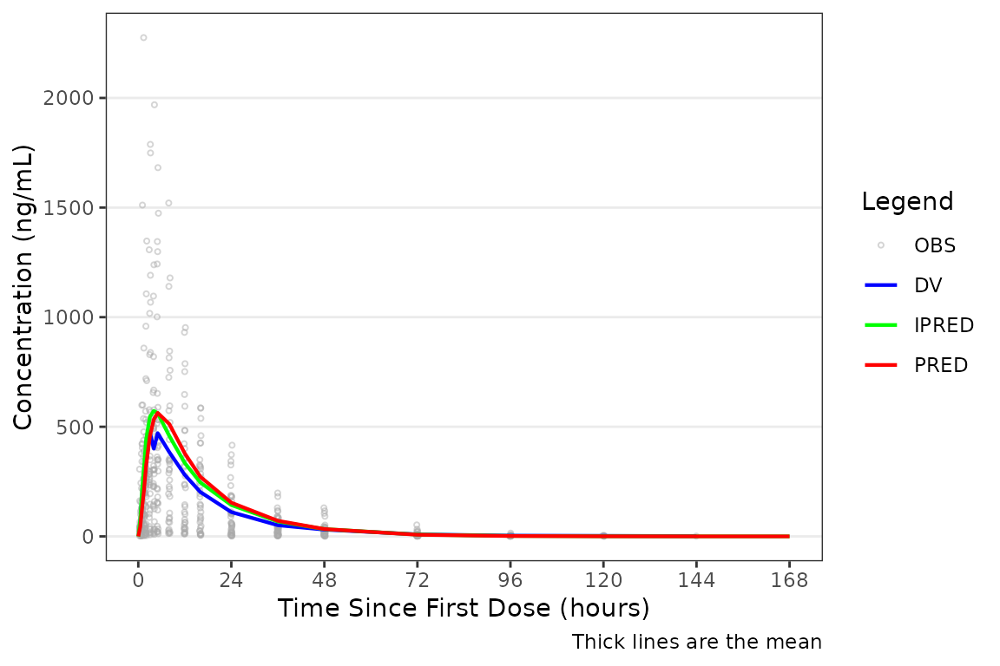
Applying Dose-normalization
The pooled analysis population includes multiple dose levels in a single plot, which is probably not optimal as a population PK model diagnostic. A better minimal plot representation of these data can be obtained by dose-normalizing and stratifying by study part to separate out the fast and food effect portions:
plot_gof(data = plot_data, dv_var = "ODV", dosenorm = TRUE, dose_var = DOSE) +
scale_x_continuous(breaks = seq(0, 168, 24)) +
labs(y = "Dose-normalized Conc. (ng/mL/mg)", x = "Time Since First Dose (hours)") +
facet_wrap(~`Food Status`)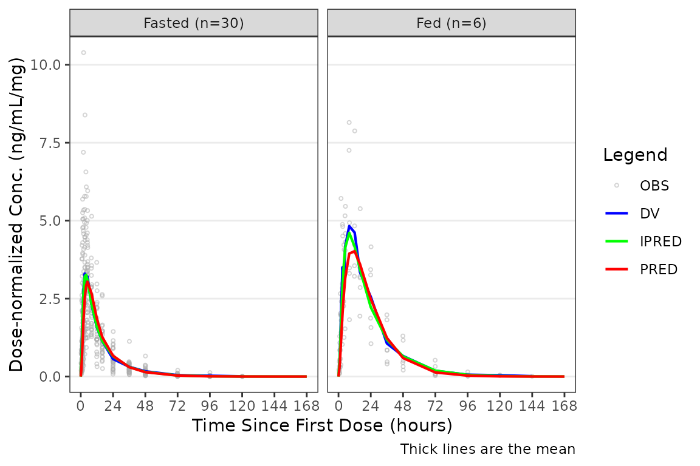
Facetting by Study Design (Extrinsic) Factors
Although, generally population goodness-of-fit plots are stratified by study design (extrinsic) factors (e.g., Dose and Food Status) in order to assess the adequacy of model fit in each unique study condition.
plot_gof(data = plot_data, dv_var = "ODV") +
scale_x_continuous(breaks = c(0, 24, 72, 120, 168)) +
labs(y = "Concentration (ng/mL)", x = "Time Since First Dose (hours)") +
facet_wrap(~`Dose and Food`, scales = "free")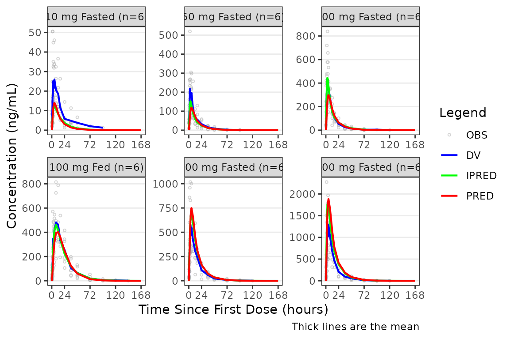
Controlling Visible Output Variables
The shown argument controls which output variables are
displayed. The defaults can be viewed by running
plot_gof_shown() with no arguments:
plot_gof_shown()
#> $obs
#> [1] TRUE
#>
#> $dv
#> [1] TRUE
#>
#> $pred
#> [1] TRUE
#>
#> $ipred
#> [1] TRUEThe components of the list correspond to the following plot elements:
- Observed points/lines:
obs - DV central tendency:
dv - PRED central tendency:
pred - IPRED central tendency:
ipred
One or more elements to be updated from the defaults above can be
passed via plot_gof_shown() to the shown
argument. Any elements not specified will inherit the defaults.
Some analysts prefer to only overlay the “typical value” in these plots and exclude IPRED:
plot_gof(data = plot_data, dv_var = "ODV",
shown = plot_gof_shown(ipred = FALSE)) +
scale_x_continuous(breaks = c(0, 24, 72, 120, 168)) +
labs(y = "Concentration (ng/mL)", x = "Time Since First Dose (hours)") +
facet_wrap(~`Dose and Food`, scales = "free")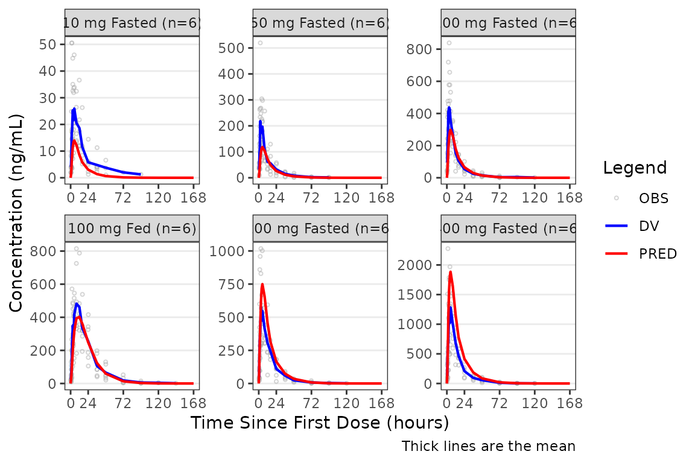
The observed data points can also be removed with
obs = FALSE. Notice how different this plot appears when
only visualizing central tendency!
plot_gof(data = plot_data, dv_var = "ODV",
shown = plot_gof_shown(obs = FALSE)) +
scale_x_continuous(breaks = c(0, 24, 72, 120, 168)) +
labs(y = "Concentration (ng/mL)", x = "Time Since First Dose (hours)") +
facet_wrap(~`Dose and Food`, scales = "free") 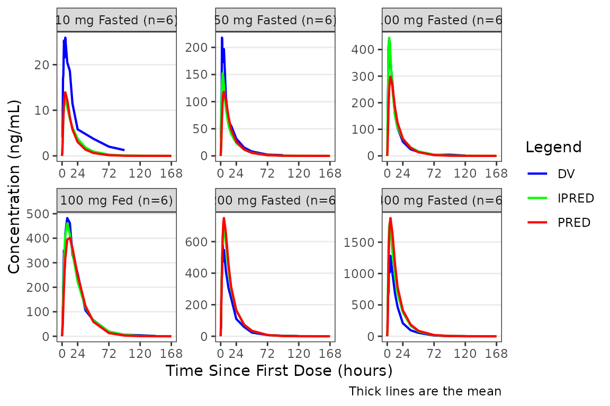
Theshown object can be stored and reused across multiple
plot_gof() calls to maintain consistent visibility settings
throughout a workflow:
my_shown <- plot_gof_shown(ipred = FALSE)
plot_gof(filter(plot_data, FOOD == 0), dv_var = ODV, shown = my_shown) +
scale_x_continuous(breaks = c(0, 24, 72, 120, 168)) +
labs(y = "Concentration (ng/mL)", x = "Time Since First Dose (hours)") +
facet_wrap(~`Dose and Food`, scales = "free")
plot_gof(filter(plot_data, FOOD == 1), dv_var = ODV, shown = my_shown) +
scale_x_continuous(breaks = c(0, 24, 72, 120, 168)) +
labs(y = "Concentration (ng/mL)", x = "Time Since First Dose (hours)") +
facet_wrap(~`Dose and Food`, scales = "free")Specifying the Central Tendency
plot_gof() inherits its central tendency handling
functionality from plot_dvtime(). Both functions use the
stat_summary() function from ggplot2 to
calculate and plot the central tendency measures and error bars. The
summary statistics calculated are specified by the cent
argument.
In plot_gof(), variability (SD, IQR) is plotted for the
observed data (DV) and only the central tendency measures are calculated
and returned for model predictions (PRED, IPRED).
An often overlooked feature of stat_summary(), is that
it calculates the summary statistics after any transformations
to the data performed by changing the scales. This means that when
scale_y_log10() is applied to the plot, the data are
log-transformed for plotting and the central tendency measure returned
with "mean" is the geometric mean.
If the log_y argument is used to generate semi-log plots
along with show_captions = TRUE, then the caption will
delineate where arithmetic and geometric means are being returned.
plot_gof(data = plot_data, dv_var = "ODV", cent = "mean_sdl",
log_y = TRUE) +
scale_x_continuous(breaks = c(0, 24, 72, 120, 168)) +
labs(y = "Concentration (ng/mL)", x = "Time Since First Dose (hours)") +
facet_wrap(~`Dose and Food`, scales = "free")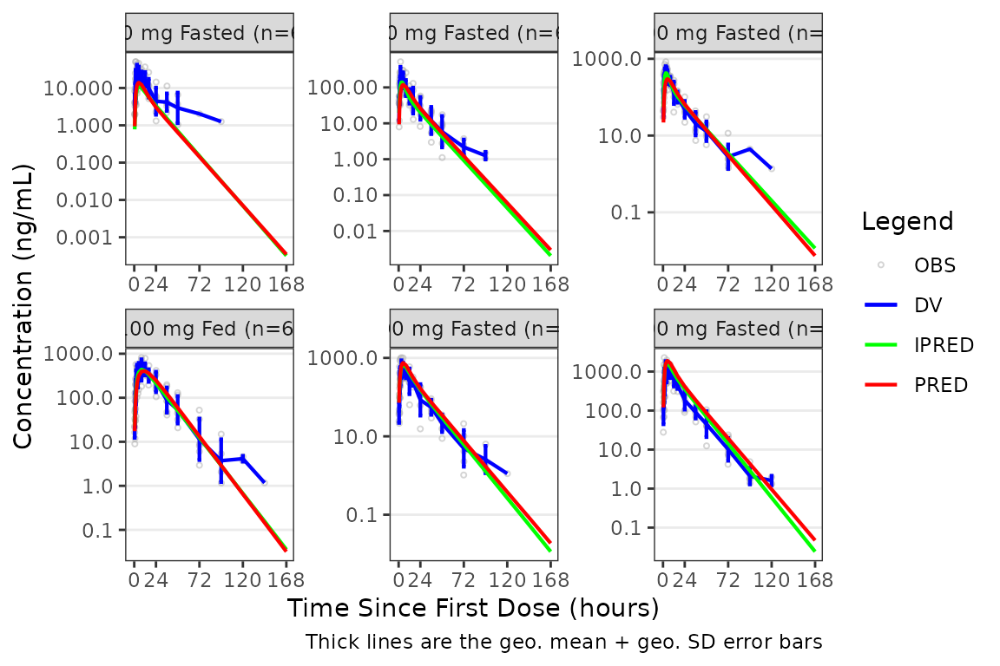
The caption will NOT update if a new axis is added to the
plot object outside of plot_gof() with
scale_y_log10().
plot_gof(data = plot_data, dv_var = "ODV", cent = "mean_sdl") +
scale_x_continuous(breaks = c(0, 24, 72, 120, 168)) +
labs(y = "Concentration (ng/mL)", x = "Time Since First Dose (hours)") +
facet_wrap(~`Dose and Food`, scales = "free") +
scale_y_log10()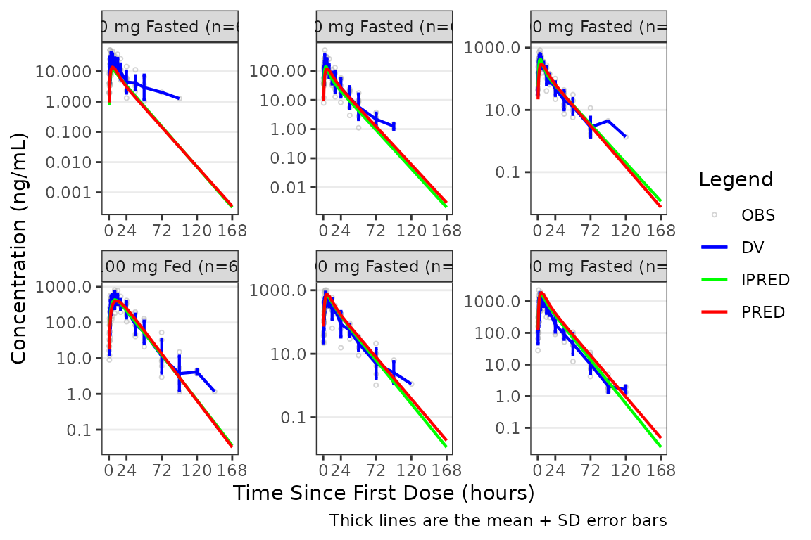
Transformation of the plot to a semi-log scale (log-scale y-axis
only) is recommended to be performed using the log_y
argument for the following benefits:
- Includes log tick marks on the y-axis
- Updates the caption with the correct central tendency measure if
show_captions = TRUE.
Handling Below-the-Limit-of-Quantification (BLQ) Data
By default plot_gof() excludes BLQ records
(MDV == 1) from the central tendency calculation, which can
artificially flatten or distort the observed central tendency in the
late terminal phase when visualizing data on a semi-log scale.
The loq and loq_method arguments in
plot_gof() inherit the BLQ handling pipeline from
plot_dvtime(). plot_gof includes one
additional argument in the pipeline, blq_mode, which
controls whether the imputation extends to the prediction layers
(PRED, IPRED) or stays scoped to the observed
layer (DV) only.
The example dataset data_sad_pkfit carries an
LLOQ = 1 ng/mL and ~169 BLQ rows. Without BLQ handling, the
observed line drops or terminates at late times because those records
are filtered out of the central tendency.
plot_gof(plot_data, dv_var = "ODV", log_y = TRUE) +
labs(x = "Time (h)", y = "Concentration (ng/mL)")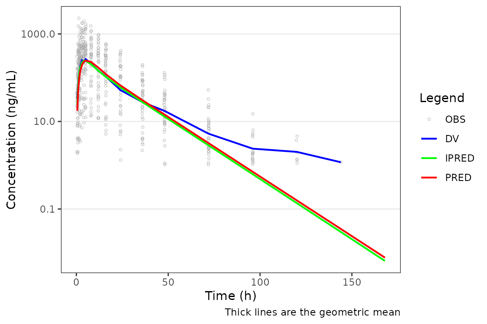
To anchor the late-time visual to the assay LLOQ, pass
loq and a non-zero loq_method. With
loq_method = 2 all BLQ observations are imputed to
0.5 * LOQ, the dashed LLOQ reference line and a
LLOQ = 1 legend entry are added automatically, and the
observed (DV) central tendency continues at
y = 0.5 for late times. Predictions are not
imputed by default — they follow the model’s natural decay through and
below the LLOQ.
plot_gof(plot_data, dv_var = "ODV",
loq = 1, loq_method = 2,
log_y = TRUE) +
labs(x = "Time (h)", y = "Concentration (ng/mL)")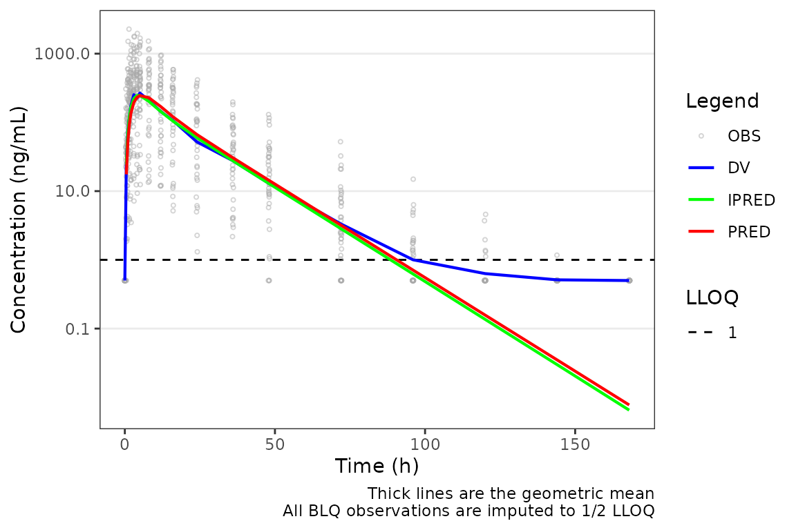
When loq is omitted and the input dataset carries an
LLOQ column (as data_sad_pkfit does), the
per-row LLOQ value is used as each observation’s imputation
threshold. The chunk below renders the same plot as the previous one
without specifying loq explicitly:
plot_gof(plot_data, dv_var = "ODV",
loq_method = 2,
log_y = TRUE) +
labs(x = "Time (h)", y = "Concentration (ng/mL)")
This is the recommended setting for evaluating model fit, since the prediction lines are unaltered model output and any divergence between the observed plateau and the prediction trajectory below the LLOQ is itself diagnostic information.
Setting blq_mode = "all" extends the imputation to
PRED and IPRED as well — any prediction below
the LLOQ snaps to 0.5 * LOQ. Use this when the GOF visual
should mirror an estimation engine that censored predictions during the
fit (e.g., M3-style likelihood with explicit BLQ censoring), so the
rendered prediction lines reflect the same data the likelihood saw.
plot_gof(plot_data, dv_var = "ODV",
loq = 1, loq_method = 2,
blq_mode = "all",
log_y = TRUE) +
labs(x = "Time (h)", y = "Concentration (ng/mL)")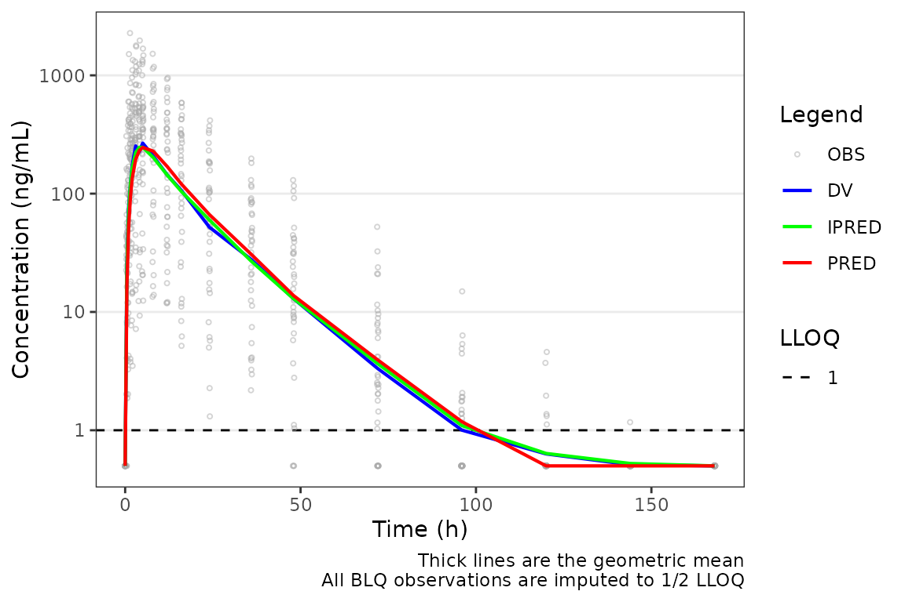
In short: pick blq_mode = "obs" (default) when you want
to see how well the model’s natural prediction (uncensored) matches
censored observations — predictions extending below the LLOQ signal
where the model expects sub-quantifiable concentrations. Pick
blq_mode = "all" when you want a like-for-like visual
against an estimation pipeline that censored the predictions.
loq_method = 1 is also available: it imputes only the
post-dose BLQ records to 0.5 * LOQ and pre-dose BLQ to
0 — useful for plotting on linear scales. See plot_dvtime() for the
full method semantics.
Adjusting the Plot Theme with plot_gof_theme()
plot_gof() aesthetic control arguments are not reviewed
in detail in this vignette. See the Plot
Themes and Aesthetics vignette for details on customizing plot
appearance.
The theme constructor factory function for plot_gof() is
plot_gof_theme().
plot_gof_theme()
#> <plot_gof_theme>
#> obs_point <pmx_point>: shape = 1, size = 0.75, alpha = 0.5, color = darkgrey
#> obs_line <pmx_line>: linewidth = 0.5, linetype = 1, alpha = 0.75, color = darkgrey
#> cent_point <pmx_point>: shape = 16, size = 1.25, alpha = 0
#> cent_line <pmx_line>: linewidth = 0.75, linetype = 1, alpha = 1
#> cent_errorbar <pmx_errorbar>: linewidth = 0.75, linetype = 1, alpha = 1, width = NULL
#> ref_line <pmx_line>: linewidth = 0.5, linetype = 2, alpha = 1
#> loq_line <pmx_line>: linewidth = 0.5, linetype = 2, alpha = 1
#> cent_color <pmx_color>: dv = blue, pred = red, ipred = greenSay we want to add points at the binned values for the central
tendency lines. The points are suppressed by default
alpha=0. We can accomplish this theme change by defining a
new theme and passing that to the theme argument of
plot_gof().
gof_new_theme <- plot_gof_theme(
cent_point = pmx_point(shape = 16, alpha = 1, size = 1.5)
)
plot_gof(data = plot_data, dv_var = "ODV", cent = "mean",
log_y = TRUE, theme = gof_new_theme) +
scale_x_continuous(breaks = c(0, 24, 72, 120, 168)) +
labs(y = "Concentration (ng/mL)", x = "Time Since First Dose (hours)") +
facet_wrap(~`Dose and Food`, scales = "free") 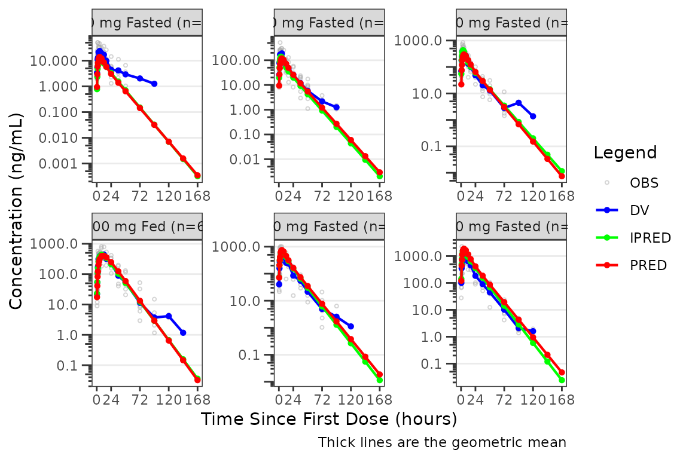
Individual Concentration-time plots
The previous section provides an overview of how to generate
population overlay GOF plots using plot_gof(); however, we
can also use plot_gof() to generate subject-level
visualizations with a little pre-processing of the input dataset. The
shown argument via plot_gof_shown() can be
used to suppress the population prediction (PRED) in these plots
evaluating fit at the individual level.
We can plot an individual subject by filtering the input dataset.
This could be extended to generate plots for all individuals using
for loops, lapply(), purrr::map()
functions, or other methods.
ids <- sort(unique(plot_data$ID)) #vector of unique subject ids
n_ids <- length(ids) #count of unique subject ids
plots_per_pg <- 4
n_pgs <- ceiling(n_ids/plots_per_pg) #Total number of pages needed
plist<- list()
for(i in 1:n_ids){
plist[[i]] <- plot_gof(filter(plot_data, ID == ids[i]),
dv_var = "ODV",
log_y = TRUE,
id_var = ID,
shown = plot_gof_shown(pred = FALSE, dv = FALSE),
show_caption = FALSE) +
facet_wrap(~DoseFood) +
scale_x_continuous(breaks = seq(0, 168, 24)) +
labs(title = paste0("ID = ", ids[i]), y = "Concentration (ng/mL)", x = "Time (hours)") +
theme(legend.position="none")
}
lapply(1:n_pgs, function(n_pg) {
i <- (n_pg-1)*plots_per_pg+1
j <- n_pg*plots_per_pg
wrap_plots(plist[i:j])
})
#> [[1]]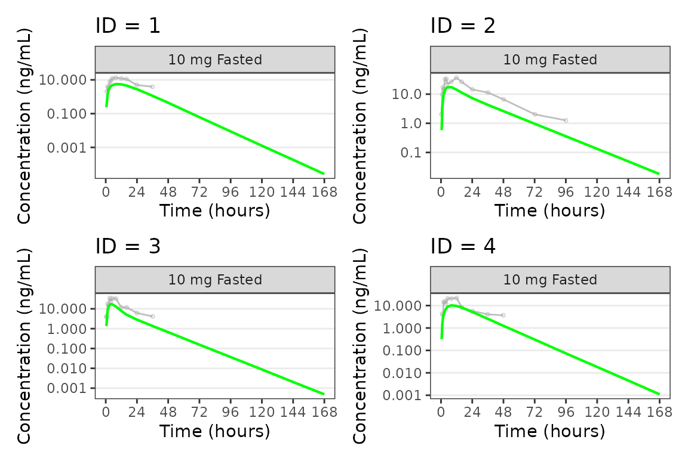
#>
#> [[2]]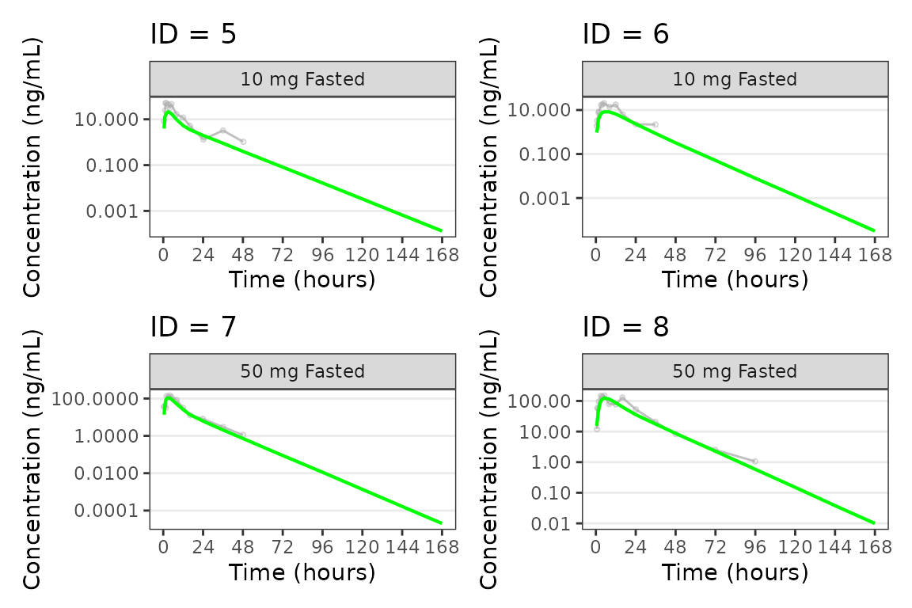
#>
#> [[3]]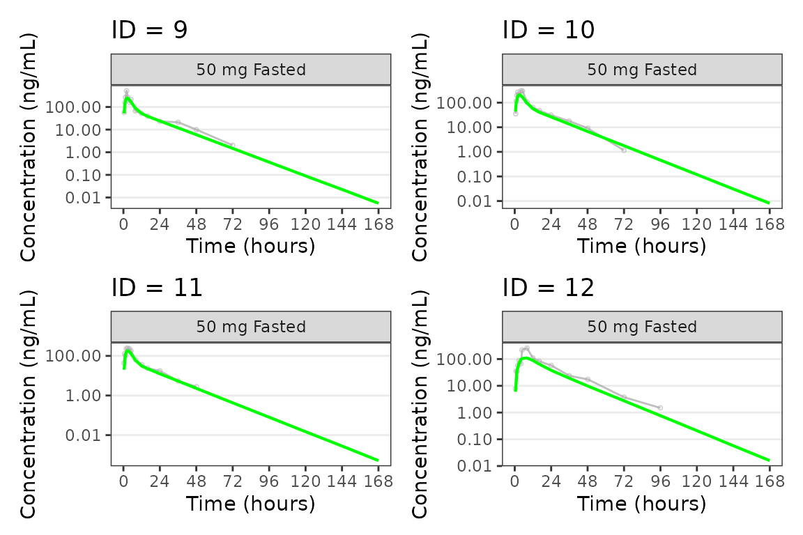
#>
#> [[4]]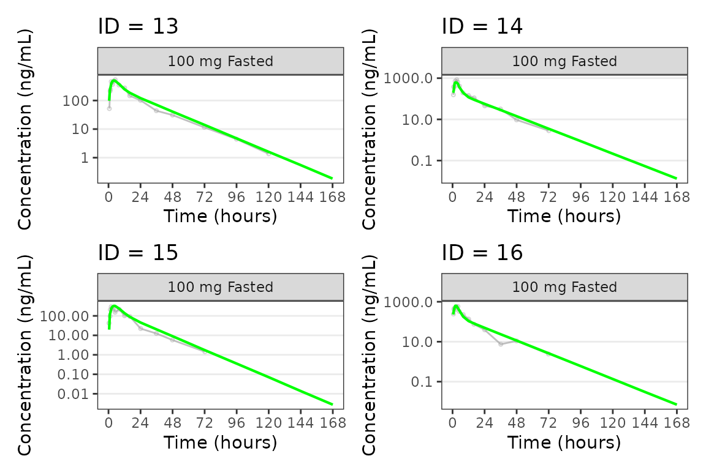
#>
#> [[5]]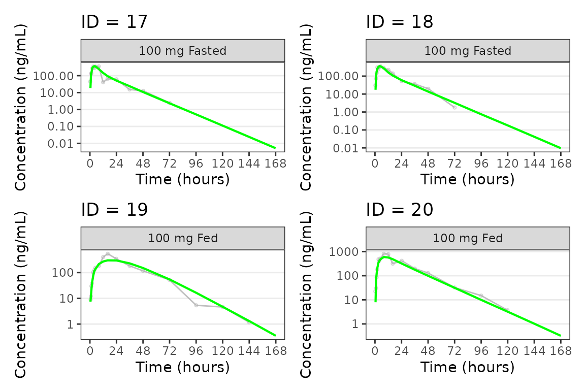
#>
#> [[6]]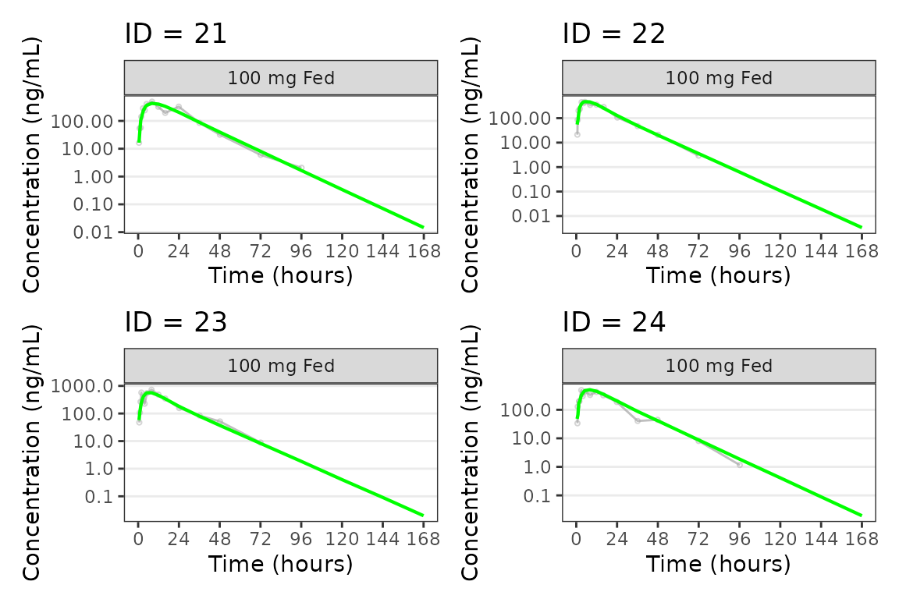
#>
#> [[7]]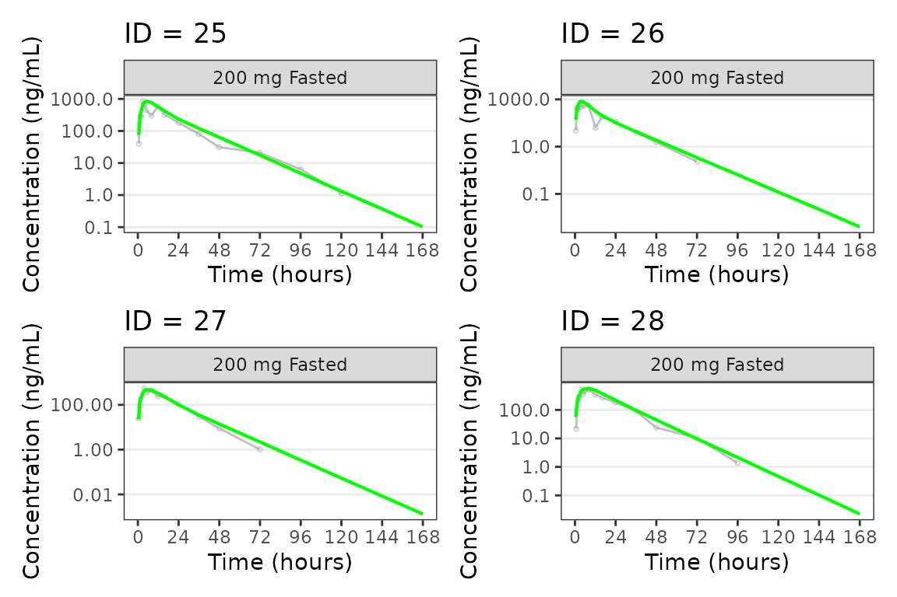
#>
#> [[8]]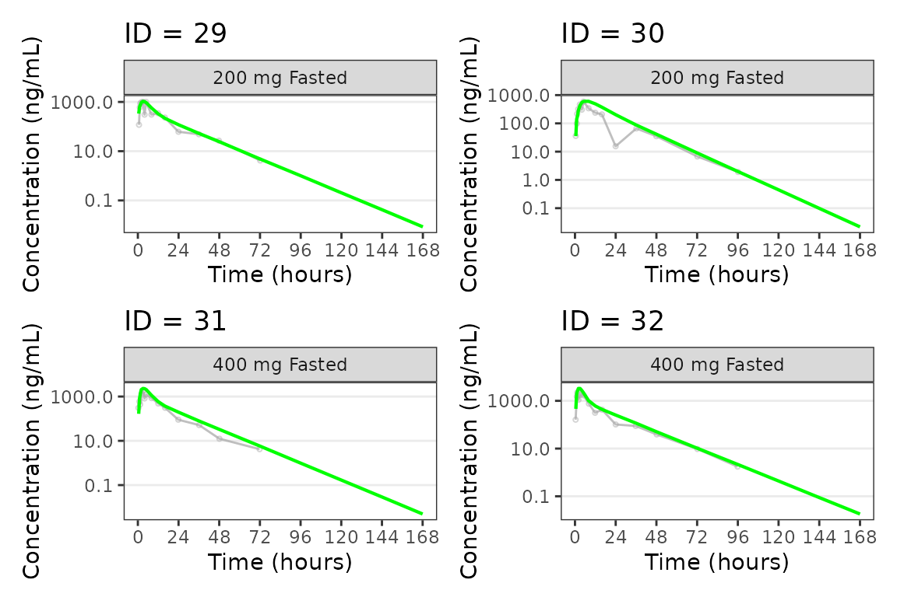
#>
#> [[9]]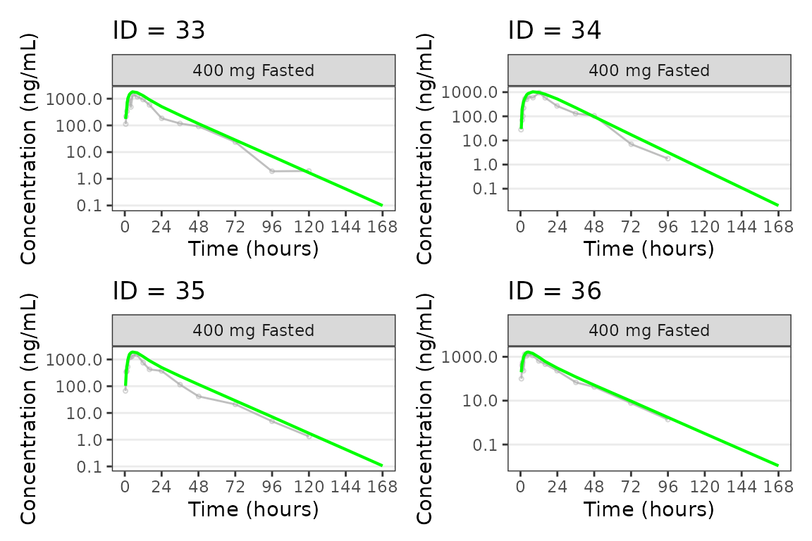
See also
- PK and PK/PD EDA workflow — exploratory analysis of continuous longitudinal concentration-time data, response-time, and response-concentration data.
- Plot Themes and Aesthetics — element constructors, theme factories, and class system for customizing plot output.